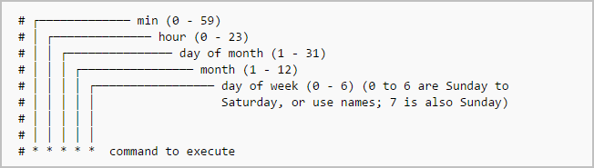

Tareas Cron
Las tareas CRON son procesos que se ejecutan cada cierto intervalo de tiempo, la estructura de una tarea CRON es la siguiente:
Para empezar necesitaremos definir el intervalo de tiempo para nuestro CRON.
Ahora indicamos el usuario que va a ejecutar el CRON y la tarea que queremos ejecutar.
* * * * * root /home/prueba/prueba.sh Por ultimo guardaremos este CRON
/etc/cron.d Volver al indice